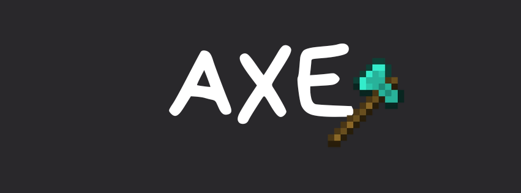

El combate con hacha (Axe) es un modo de juego sumamente estratégico. El auto-golpe (autohitting) y apuñalar por la espalda (backstabbing) son de gran importancia. Es muy común permitir que el oponente te desactive el escudo, conectarle un autohit, dispararle con una ballesta para empujarlo y alejarlo, y correr hasta que tu escudo vuelva a estar activo. Necesitas una buena comprensión de lo que cada jugador tiene disponible y, por lo tanto, qué movimiento quiere hacer. Engañar a tu oponente para que salte podría darte un crítico gratis, cambiando el rumbo de la ronda. Dispararle con el arco cerca del final de la ronda cuando no tiene escudo podría acabar con él. En cualquier momento es posible que solo tengas una oportunidad o jugada por hacer, y tu trabajo es encontrarla y ejecutarla correctamente.
Manejo del Sprint-Reset: A diferencia de las espadas donde se busca hacer combos continuos, con el hacha cada golpe cuenta el doble debido a su alto tiempo de recarga (cooldown). Dominar el W-Tap o el S-Tap inmediatamente después de romper un escudo te permite asegurar que el siguiente golpe sea un golpe crítico crítico (crit) cuando el rival quede expuesto.
Administración del Inventario: En este modo, el conteo de flechas de la ballesta y la durabilidad del escudo son recursos limitados que definen quién dicta el ritmo de la pelea. Forzar al rival a fallar sus tiros de ballesta mientras se cubre de manera eficiente te da una ventaja de posicionamiento enorme en los últimos segundos de la ronda.
El factor de la Saturación: Mantener la barra de comida al máximo usando filetes o manzanas doradas antes de los intercambios de golpes es fundamental, ya que la regeneración pasiva de vida en las versiones modernas de Java puede salvarte de morir por un flechazo sorpresa justo cuando recuperas el escudo.
| ENDER |